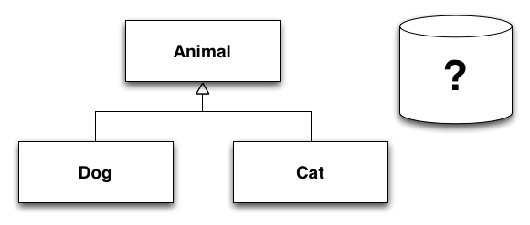
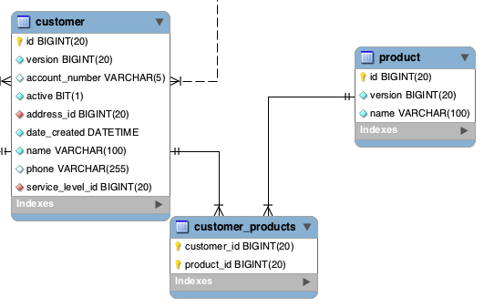
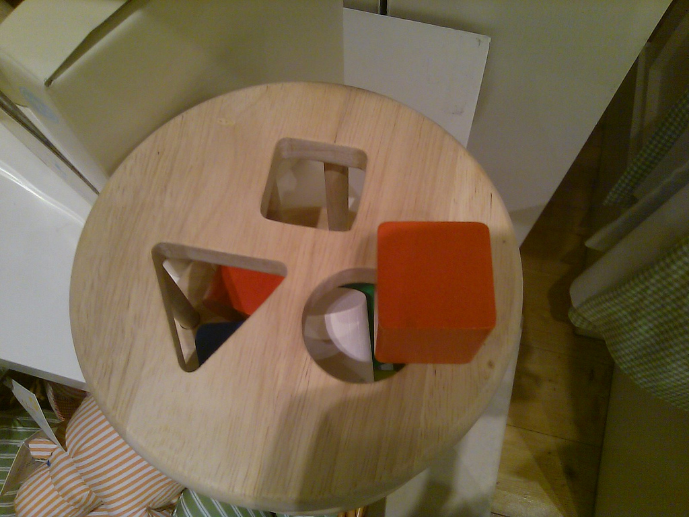

Introduction to Object Relational Mapping
1
2
3
Object Relational Impedance Mismatch
- Inheritance, abstraction, polymorphism

Object Relational Impedance Mismatch
- Different data types (String vs. VARCHAR(255))
class Customer {
Long id
String name // how many characters long could this be?
}
mysql> describe customer;
+----------------+--------------+------+-----+---------+
| Field | Type | Null | Key | Default |
+----------------+--------------+------+-----+---------+
| id | bigint(20) | NO | PRI | NULL |
| name | varchar(255) | NO | | NULL |
+----------------+--------------+------+-----+---------+
Object Relational Impedance Mismatch
- Relationships
- objects are related by reference, DB records related by primary and foreign keys

impedance mismatch

http://www.flickr.com/photos/jeffsand/3871415191
Why
- Databases are good at storing data
- Relational Databases are common
- Proven mathematical foundation
- Edgar F. Codd, "A Relational Model of Data for Large Shared Data Banks" 1970
- Mature products (both for profit and open source)
- Oracle, SQL Server
- MySql, PostgreSQL
It's changing
- NoSQL - Not Only SQL
- key/value
- document
- graph
- column
- Relational model isn't always the best mechanism to store data for every application
ORM Persistence patterns
- Service / Data Transfer Object
class Customer { // domain class
Long id
String name
CustomerDTO buildDto(){...}
}
class CustomerDto { // data transfer object
Long id
String name
}
class CustomerService { // persistence logic
void save(CustomerDto){....}
CustomerDto read(Long id){....}
}
ORM Persistence patterns
class Customer { // domain class
Long id
String name
}
class CustomerDao { // data access object
void save(CustomerDao){....}
CustomerDao read(Long id){....}
}
ORM Persistence patterns
class Customer { // domain class
Long id
String name
void save(){....}
Customer read(Long id){....}
}
ORM Frameworks (just to name a few)
- Java
- Hibernate (Grails default)
- IBATIS
- JDO
- EclipseLink
- .NET
- NHibernate
- Entity Framework
References
- http://www.agiledata.org/essays/mappingObjects.html
- "Persistence in the Enterprise: A Guide to Persistence Technologies" Geoffrey Hambrick
- http://en.wikipedia.org/wiki/Relational_model
- http://www.dcs.fmph.uniba.sk/diplomovky/obhajene/getfile.php/dp.orsag.orm.pdf?id=86&fid=147&type=application%2Fpdf
- http://www.seas.upenn.edu/~zives/03f/cis550/codd.pdf
 Mike Hugo, Piragua Consulting, Inc.
Mike Hugo, Piragua Consulting, Inc.